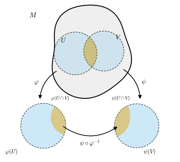
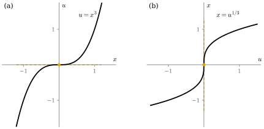

11.2 Charts, Atlases, and Smooth Structures
Goals
- 두 chart의 transition map을 정의하고, 두 chart가 smoothly compatible인지 계산으로 판정할 수 있다.
- smooth atlas 하나만으로는 불편하고 maximal atlas(smooth structure)가 필요한 이유를 설명할 수 있다.
- 모든 smooth atlas가 smooth structure를 꼭 하나 정함을 증명하고, 두 atlas가 같은 구조를 주는지 판정할 수 있다.
- \(\R\) 위의 두 smooth structure(항등 chart와 \(x^3\) chart)가 서로 다름을 보일 수 있다.
Prerequisites
Motivation
Section 11.1에서 topological manifold를 정의했다. topological manifold의 모든 점 둘레에는 chart \((U, \varphi)\)가 있어서, \(U\)의 점을 \(\R^n\)의 좌표로 부를 수 있다. 이제 그 위에서 미적분을 하고 싶다. 가장 먼저 떠오르는 방법은 함수 \(f\colon M \to \R\)을 chart로 옮겨 보는 것이다. \(f \circ \varphi^{-1}\colon \varphi(U) \to \R\)은 \(\R^n\)의 open set에서 정의된 함수이므로 Definition 2.2.11대로 smooth한지 물을 수 있다. 그러면 “\(f\)가 \(p\) 근처에서 매끄럽다”를 “\(f \circ \varphi^{-1}\)이 \(\varphi(p)\) 근처에서 매끄럽다”로 정하면 될 것 같다.
문제는 이 판정이 chart에 따라 달라질 수 있다는 것이다. topological 1-manifold \(\R\)에 두 chart \((\R, \id)\)와 \((\R, \psi)\), \(\psi(x) = x^3\)을 생각하자. \(\psi\)는 연속 bijective이고 inverse map \(u \mapsto u^{1/3}\)도 연속이므로 chart다. 함수 \(f(x) = x\)를 첫째 chart로 읽으면 \(f \circ \id^{-1}(x) = x\)로 매끄럽지만, 둘째 chart로 읽으면 \(f \circ \psi^{-1}(u) = u^{1/3}\)이어서 \(u = 0\)에서 미분가능하지도 않다(Non-example 2.3.3). 어디서 어긋났는가? 두 chart로 읽은 값 사이에는
라는 관계가 \(\psi(U \cap V)\) 위에서 성립한다(\(U\), \(V\)는 두 chart의 정의역). 오른쪽의 \(\varphi \circ \psi^{-1}\)이 매끄러우면, \(f \circ \varphi^{-1}\)이 매끄러울 때 \(f \circ \psi^{-1}\)도 매끄럽다(Proposition 2.2.12(b)). 위의 예에서는 \(\id \circ \psi^{-1}(u) = u^{1/3}\)이 매끄럽지 않아서 판정이 어긋났다. 그러므로 “chart로 읽은 smoothness”가 chart에 무관하려면 chart를 바꾸는 map이 양쪽으로 매끄러워야 한다. 이 절은 이 요구를 정식화한다. 그 결과가 smooth atlas이고, 거기서 한 걸음 더 나아간 것이 smooth structure다.
regular surface에서는 두 parametrization 사이의 change of parameters가 저절로 diffeomorphism이었다(Theorem 6.3.1). 둘러싼 공간이 없는 manifold에서는 이것을 정리로 얻을 수 없으므로 정의에 넣는다. 함수와 map의 smoothness는 이 절의 결과를 써서 Chapter 12에서 정식으로 정의한다.

Transition Maps and Smooth Compatibility
\(M\)이 topological \(n\)-manifold이고 \((U, \varphi)\), \((V, \psi)\)가 chart라 하자. \(U \cap V\)는 \(U\)에서 열려 있으므로 \(\varphi(U \cap V)\)는 \(\R^n\)의 open set이다(Proposition 11.1.5(a)의 증명). \(\psi(U \cap V)\)도 마찬가지다. \(\varphi^{-1}\)을 \(\varphi(U \cap V)\)로 제한하면 값이 \(U \cap V\)에 있으므로 다음 합성이 정의된다.
Definition 11.2.1 (transition map and smooth compatibility). topological \(n\)-manifold \(M\)의 두 chart \((U, \varphi)\), \((V, \psi)\)에 대하여 \(U \cap V \ne \varnothing\)일 때
를 \(\varphi\)에서 \(\psi\)로 가는 transition map(좌표변환)이라 한다. \(U \cap V = \varnothing\)이거나 transition map \(\psi \circ \varphi^{-1}\)이 diffeomorphism(Definition 2.3.1)이면, 두 chart가 smoothly compatible(smoothly compatible이다)고 한다.
transition map \(\psi \circ \varphi^{-1}\)은 homeomorphism이고 그 inverse map은 반대 방향의 transition map \(\varphi \circ \psi^{-1}\)이다. 그러므로 “\(\psi \circ \varphi^{-1}\)이 diffeomorphism”은 “\(\psi \circ \varphi^{-1}\)과 \(\varphi \circ \psi^{-1}\)이 둘 다 매끄럽다”와 같은 말이다. 특히 smooth compatibility는 두 chart에 대해 symmetric인 관계다. 한쪽 방향만 매끄러워서는 안 된다는 것을 Non-example 11.2.3에서 본다.
Example 11.2.2 (smoothly compatible인 chart). (a) 모든 chart \((U, \varphi)\)는 자기 자신과 smoothly compatible이다. transition map이 identity map \(\id_{\varphi(U)}\)이기 때문이다.
(b) \(\R\)에서 \((\R, \id)\)와 \((\R, \chi)\), \(\chi(x) = 2x + 1\)은 smoothly compatible이다. transition map \(\chi \circ \id^{-1}(x) = 2x + 1\)과 \(\id \circ \chi^{-1}(u) = (u - 1)/2\)가 모두 일차식이다.
(c) \(\R\)의 open set \((0, \infty)\)에서 \(\log\colon (0, \infty) \to \R\)은 homeomorphism이므로 \(((0, \infty), \log)\)는 \(\R\)의 chart다. \((\R, \id)\)와의 transition map은 \(\log\colon (0, \infty) \to \R\)이고 역은 \(\exp\)다. 둘 다 매끄러우므로(Example 2.3.2(b)) 두 chart는 smoothly compatible이다.
Non-example 11.2.3 (\(x^3\) chart). \(\R\)의 chart \((\R, \id)\)와 \((\R, \psi)\), \(\psi(x) = x^3\)은 smoothly compatible이 아니다. \(\id\)에서 \(\psi\)로 가는 transition map \(\psi \circ \id^{-1}(x) = x^3\)은 매끄럽지만, 반대 방향 \(\id \circ \psi^{-1}(u) = u^{1/3}\)은 \(u = 0\)에서 미분가능하지 않다. difference quotient가 \(h^{1/3}/h = h^{-2/3} \to \infty\) (\(h \to 0^+\))이기 때문이다(Non-example 2.3.3, Figure 11.2.2). 즉 \(x^3\)은 smooth homeomorphism이지만 diffeomorphism이 아니다.
Verification: verify/v-11-2-smooth-structures.py

Remark 11.2.4 (smooth transition map은 dimension을 보존한다). \(\varphi\colon U \to \varphi(U) \subseteq \R^m\)과 \(\psi\colon V \to \psi(V) \subseteq \R^n\)이 open set 위로 가는 homeomorphism이고 \(U \cap V \ne \varnothing\)이며 transition map \(\psi \circ \varphi^{-1}\)이 diffeomorphism이면 \(m = n\)이다. \(\R^m\)의 공집합이 아닌 open set에서 \(\R^n\)의 open set으로 가는 diffeomorphism이 있으면 \(m = n\)이기 때문이다(Proposition 2.3.4). homeomorphism만 있을 때의 같은 사실(Theorem 11.1.12)은 algebraic topology가 필요했지만, transition map이 매끄러우면 chain rule과 linear algebra만으로 충분하다.
Atlases
Definition 11.2.5 (atlas). topological \(n\)-manifold \(M\)의 chart들의 모임 \(\mathcal{A} = \{(U_\alpha, \varphi_\alpha)\}_{\alpha}\)의 정의역들이 \(M\)을 덮으면, 즉 \(\bigcup_\alpha U_\alpha = M\)이면 \(\mathcal{A}\)를 \(M\)의 atlas(아틀라스)라 한다. \(\mathcal{A}\)의 어느 두 chart도 smoothly compatible이면 \(\mathcal{A}\)를 smooth atlas(매끄러운 아틀라스)라 한다.
Example 11.2.6 (smooth atlas). (a) \(\{(\R^n, \id)\}\)는 \(\R^n\)의 smooth atlas다. chart가 하나뿐이면 확인할 transition map은 \(\id\)뿐이므로(Example 11.2.2(a)) chart 하나로 된 atlas는 언제나 매끄럽다. 그래서 \(\{(\R, \psi)\}\), \(\psi(x) = x^3\)도 \(\R\)의 smooth atlas이고, 그래프 \(\Gamma(f)\)의 \(\{(\Gamma(f), \pi)\}\)(Example 11.1.14(d))도 smooth atlas다.
(b) \(\{((-\infty, 1), \id),\ ((0, \infty), \id)\}\)는 \(\R\)의 smooth atlas다. 겹치는 곳 \((0, 1)\)에서 transition map이 identity map이다.
(c) \(S^n\)의 두 stereographic projection \(\{(S^n \setminus \{N\}, \sigma),\ (S^n \setminus \{S\}, \tilde\sigma)\}\)은 smooth atlas다. transition map \(\tilde\sigma \circ \sigma^{-1}(u) = u/\abs{u}^2\)의 계산은 Section 11.3에서 한다. \(\RP^n\)의 \(\{(U_i, \varphi_i)\}\)가 smooth atlas라는 것은 Section 11.4에서 보인다.
Non-example 11.2.7. \(\{(\R, \id),\ (\R, \psi)\}\), \(\psi(x) = x^3\)은 \(\R\)의 atlas이지만 smooth atlas가 아니다. 두 chart가 smoothly compatible이 아니기 때문이다(Non-example 11.2.3). 이 예에서 보듯, smooth atlas 두 개(\(\{(\R, \id)\}\)와 \(\{(\R, \psi)\}\))를 합친다고 smooth atlas가 되지는 않는다.
Maximal Atlases and Smooth Structures
smooth atlas를 하나 정하면 미적분의 무대가 생긴다. 그러나 atlas 하나를 “manifold의 구조”로 삼으면 두 가지가 불편하다.
- 같은 것을 다르게 부른다. Example 11.2.6(a)의 \(\{(\R, \id)\}\)와 (b)의 두 chart atlas는 서로 다른 atlas이지만, 두 atlas로 판정한 smoothness는 같다. (b)의 chart들은 (a)의 chart를 제한한 것일 뿐이다. 이런 두 atlas는 같은 구조로 보아야 한다.
- 편리한 chart를 쓸 수 없다. \(\R^2\)에서 계산을 하다 보면 polar coordinates를 쓰고 싶어진다. 그런데 polar coordinates chart(Example 11.2.12)는 atlas \(\{(\R^2, \id)\}\)에 들어 있지 않다. 정해 둔 atlas에 없는 chart를 쓸 때마다 “이 chart도 괜찮은가”를 따로 따져야 한다.
두 문제를 한꺼번에 해결하는 방법은 쓸 수 있는 chart를 모두 모아 두는 것이다.
Definition 11.2.8 (maximal atlas). topological \(n\)-manifold \(M\)의 smooth atlas \(\mathcal{A}\)가 다음 조건을 만족하면 maximal atlas(극대 아틀라스)라 한다. \(\mathcal{A}\)의 모든 chart와 smoothly compatible인 \(M\)의 chart는 모두 \(\mathcal{A}\)에 속한다.
다시 말해 maximal atlas에는 chart를 더 넣을 수 없다. 넣을 수 있는 chart는 이미 다 들어 있다. 이제 manifold의 smooth structure를 maximal atlas로 정한다.
Definition 11.2.9 (smooth structure and smooth manifold). topological \(n\)-manifold \(M\) 위의 maximal atlas를 \(M\)의 smooth structure(매끄러운 구조)라 한다. topological manifold \(M\)과 그 위의 smooth structure \(\mathcal{A}\)의 짝 \((M, \mathcal{A})\)를 \(n\)-dimensional smooth manifold(매끄러운 다양체)라 한다.
smooth structure \(\mathcal{A}\)에 속한 chart를 smooth chart(매끄러운 차트)라 하고, 그 coordinate functions를 smooth coordinates라 한다. 구조가 분명하면 \((M, \mathcal{A})\)를 줄여서 \(M\)이라 쓴다. smooth manifold는 먼저 topological manifold여야 한다는 데 주의하자. Hausdorff 조건과 second countable 조건은 transition map의 smoothness와 상관없이 따로 요구된다(Exercise 11.2.5).
maximal atlas는 모든 smooth chart를 담고 있으므로 보통 셀 수 없이 많은 chart로 이루어져 있다. 그것을 일일이 적을 수는 없다. 다행히 smooth atlas 하나만 주면 smooth structure가 저절로 하나 정해진다. 그 증명의 핵심은 다음 관찰이다. 두 chart가 “atlas의 모든 chart와” compatible이면 둘은 서로 compatibility된다.
Proposition 11.2.10 (smooth atlas가 정하는 smooth structure). \(\mathcal{A}\)가 topological \(n\)-manifold \(M\)의 smooth atlas라 하자.
- (a) chart \((W, \theta)\)와 \((W', \theta')\)이 둘 다 \(\mathcal{A}\)의 모든 chart와 smoothly compatible이면, \((W, \theta)\)와 \((W', \theta')\)은 서로 smoothly compatible이다.
- (b) \(\overline{\mathcal{A}}\)를 \(\mathcal{A}\)의 모든 chart와 smoothly compatible인 \(M\)의 chart 전체라 하자. \(\overline{\mathcal{A}}\)는 \(\mathcal{A}\)를 포함하는 smooth structure이고, \(\mathcal{A}\)를 포함하는 smooth structure는 \(\overline{\mathcal{A}}\) 하나뿐이다.
- (c) 두 smooth atlas \(\mathcal{A}\), \(\mathcal{B}\)가 같은 smooth structure를 정할(\(\overline{\mathcal{A}} = \overline{\mathcal{B}}\)) 필요충분조건은 \(\mathcal{A} \cup \mathcal{B}\)가 smooth atlas인 것이다.
이 명제가 말하는 것. smooth structure를 주려면 smooth atlas 하나만 주면 된다. 두 atlas가 같은 구조를 주는지는 “섞어도 여전히 smooth atlas인가”로 판정한다.
Proof idea: \(\theta' \circ \theta^{-1}\)의 smoothness는 국소적인 성질이다. 한 점 근처에서 \(\mathcal{A}\)의 chart \(\varphi\)를 “중간 역”으로 끼워 \(\theta' \circ \theta^{-1} = (\theta' \circ \varphi^{-1}) \circ (\varphi \circ \theta^{-1})\)로 쪼개면 두 조각이 모두 매끄럽다.
Proof. 먼저 smoothness가 국소적인 성질임을 확인하자. \(O \subseteq \R^n\)이 열려 있고 \(F\colon O \to \R^m\)이라 할 때, \(O\)의 모든 점이 \(F\)가 smooth한 open neighborhood를 가지면 \(F\)는 \(O\)에서 매끄럽다. Definition 2.2.11의 조건(모든 order의 partial derivative가 존재하고 연속)은 한 점에서의 partial derivative와 그 점에서의 연속성에 관한 것이고, 둘 다 그 점의 아무리 작은 neighborhood에서의 값으로 정해지기 때문이다.
(a) \(W \cap W' = \varnothing\)이면 할 일이 없다. \(x \in \theta(W \cap W')\)라 하고 \(p = \theta^{-1}(x)\)라 하자. \(\mathcal{A}\)는 \(M\)을 덮으므로 \(p \in U\)인 \((U, \varphi) \in \mathcal{A}\)가 있다. \(O = \theta(W \cap W' \cap U)\)는 \(x\)를 포함하는 \(\R^n\)의 open set이고, \(O\) 위에서
이다. \((W, \theta)\)가 \((U, \varphi)\)와 compatible이므로 \(\varphi \circ \theta^{-1}\)은 \(\theta(W \cap U)\)에서 매끄럽고, 따라서 그 open subset \(O\)에서도 매끄럽다. 그 값은 \(\varphi(W \cap W' \cap U) \subseteq \varphi(W' \cap U)\)에 있다. \((W', \theta')\)이 \((U, \varphi)\)와 compatible이므로 \(\theta' \circ \varphi^{-1}\)은 \(\varphi(W' \cap U)\)에서 매끄럽다. Proposition 2.2.12(b)에 의해 (11.2.3)의 합성은 \(O\)에서 매끄럽다. \(x\)는 \(\theta(W \cap W')\)의 임의의 점이었으므로, 앞 문단에 의해 \(\theta' \circ \theta^{-1}\)은 \(\theta(W \cap W')\) 전체에서 매끄럽다. \(\theta\)와 \(\theta'\)의 역할을 바꾸면 \(\theta \circ \theta'^{-1}\)도 매끄럽다. 따라서 \(\theta' \circ \theta^{-1}\)은 diffeomorphism이다.
(b) \(\mathcal{A}\)가 smooth atlas이므로 \(\mathcal{A}\)의 chart는 \(\mathcal{A}\)의 모든 chart와 compatible이고, 따라서 \(\mathcal{A} \subseteq \overline{\mathcal{A}}\)이다. 그러므로 \(\overline{\mathcal{A}}\)의 정의역들은 \(M\)을 덮는다. (a)에 의해 \(\overline{\mathcal{A}}\)의 두 chart는 서로 compatible이므로 \(\overline{\mathcal{A}}\)는 smooth atlas다. 극대이다: 어떤 chart가 \(\overline{\mathcal{A}}\)의 모든 chart와 compatible이면 특히 \(\mathcal{A}\)의 모든 chart와 compatible이므로 \(\overline{\mathcal{A}}\)에 속한다. 유일하다: \(\mathcal{B}\)가 \(\mathcal{A}\)를 포함하는 smooth structure라 하자. \(\mathcal{B}\)의 chart는 \(\mathcal{B}\)의 모든 chart, 특히 \(\mathcal{A}\)의 모든 chart와 compatible이므로 \(\mathcal{B} \subseteq \overline{\mathcal{A}}\)이다. 거꾸로 \((W, \theta) \in \overline{\mathcal{A}}\)와 \((V, \psi) \in \mathcal{B}\)는 둘 다 \(\mathcal{A}\)의 모든 chart와 compatible이므로 (a)에 의해 서로 compatible이다. 즉 \((W, \theta)\)는 \(\mathcal{B}\)의 모든 chart와 compatible이고, \(\mathcal{B}\)가 극대이므로 \((W, \theta) \in \mathcal{B}\)이다. 따라서 \(\mathcal{B} = \overline{\mathcal{A}}\)이다.
(c) \(\mathcal{A} \cup \mathcal{B}\)가 smooth atlas이면 (b)에 의해 \(\overline{\mathcal{A} \cup \mathcal{B}}\)는 \(\mathcal{A}\)를 포함하는 smooth structure이므로 \(\overline{\mathcal{A}}\)와 같고, 같은 이유로 \(\overline{\mathcal{B}}\)와도 같다. 거꾸로 \(\overline{\mathcal{A}} = \overline{\mathcal{B}}\)이면 \(\mathcal{A} \cup \mathcal{B} \subseteq \overline{\mathcal{A}}\)이고, smooth atlas \(\overline{\mathcal{A}}\)의 두 chart는 서로 compatible이므로 \(\mathcal{A} \cup \mathcal{B}\)는 smooth atlas다(정의역이 \(M\)을 덮는 것은 \(\mathcal{A}\)만으로 충분하다).
\(\overline{\mathcal{A}}\)를 \(\mathcal{A}\)가 정하는 smooth structure라 한다. 앞으로 smooth manifold를 줄 때는 거의 언제나 smooth atlas 하나를 주고 “이 atlas가 정하는 smooth structure”라고 말한다.
Examples: The Standard Structure on \(\R^n\) and Two Structures on \(\R\)
Example 11.2.11 (\(\R^n\)의 표준 smooth structure). smooth atlas \(\{(\R^n, \id)\}\)가 정하는 smooth structure를 \(\R^n\)의 표준 smooth structure라 한다. 어떤 chart \((U, \varphi)\)가 여기에 속하는지 알아보자. \(\id\)와의 두 transition map은 \(\varphi \circ \id^{-1} = \varphi\colon U \to \varphi(U)\)와 \(\id \circ \varphi^{-1} = \varphi^{-1}\)이다. 따라서
\((U, \varphi)\)가 표준 구조의 chart \(\iff\) \(\varphi\colon U \to \varphi(U)\)가 \(\R^n\)의 open set 사이의 diffeomorphism.
이다. 이 study set에서 \(\R^n\)을 smooth manifold로 볼 때는 따로 말하지 않으면 이 구조를 쓴다. Chapter 2의 “좌표를 매끄럽게 바꾸는 것”(Definition 2.3.1 뒤의 설명)이 곧 표준 구조의 chart를 고르는 것이다.
Example 11.2.12 (polar coordinates chart). \(\Omega = \R^2 \setminus \{(x, 0) : x \le 0\}\)이고 \(W = (0, \infty) \times (-\pi, \pi)\)라 하자. Example 2.3.10(b)에서 polar coordinates map \(P(r, \theta) = (r\cos\theta,\ r\sin\theta)\)를 \(W\)로 제한한 \(P|_W\colon W \to \Omega\)가 diffeomorphism임을 보였다. 그 inverse map을 \(\vartheta = (P|_W)^{-1}\colon \Omega \to W\)라 하면, Example 11.2.11에 의해 \((\Omega, \vartheta)\)는 \(\R^2\)의 표준 구조의 chart다. coordinate functions는 \(\vartheta = (r, \theta)\)이고, 식으로는
이다(Example 2.3.10(b)). 두 transition map을 확인해 보자. \(\vartheta\)에서 \(\id\)로 가는 transition map은 \(\id \circ \vartheta^{-1} = P|_W\)이고, total derivative는 (2.1.5)에서 \(\det DP(r, \theta) = r \gt 0\)이다. 반대 방향 \(\vartheta \circ \id^{-1} = \vartheta\)의 total derivative는 Example 2.3.10(c)에서 이미 구했다. (2.3.1)과 (2.3.3)의 첫째 등호를 옮겨 쓰면
이다. 이 행렬은 (11.2.4)의 partial derivative를 직접 계산한 것과 같다(검증 스크립트에서 확인). 두 transition map이 모두 매끄러우므로 \((\Omega, \vartheta)\)와 \((\R^2, \id)\)는 smoothly compatible이다. polar coordinates는 \(\Omega\) 밖, 예를 들어 원점이나 음의 \(x\)축에서는 chart가 되지 못한다. 원점에서는 \(\det DP = r = 0\)이고, 음의 \(x\)축에서는 \(\theta\)가 \(-\pi\)와 \(\pi\) 사이에서 끊긴다.
Verification: verify/v-11-2-smooth-structures.py
Example 11.2.13 (\(\R\) 위의 서로 다른 두 smooth structure). topological 1-manifold \(\R\) 위에 두 smooth structure를 생각하자. \(\mathcal{A}_1\)은 \(\{(\R, \id)\}\)가 정하는 표준 구조이고, \(\mathcal{A}_3\)은 \(\{(\R, \psi)\}\), \(\psi(x) = x^3\)이 정하는 구조다(Example 11.2.6(a), Proposition 11.2.10(b)). \((\R, \psi)\)는 \((\R, \id) \in \mathcal{A}_1\)과 compatible이 아니므로(Non-example 11.2.3) \((\R, \psi) \notin \mathcal{A}_1\)이다. 그런데 \((\R, \psi) \in \mathcal{A}_3\)이므로 \(\mathcal{A}_1 \ne \mathcal{A}_3\)이다. Proposition 11.2.10(c)로 말하면 \(\{(\R, \id)\} \cup \{(\R, \psi)\}\)가 smooth atlas가 아니기 때문이다(Non-example 11.2.7).
따라서 같은 topological manifold 위에 서로 다른 smooth structure가 있을 수 있다. 두 구조에서 “chart로 읽은 smoothness”가 실제로 다르다. 동기의 함수 \(f(x) = x\)는 \(\mathcal{A}_1\)의 chart로 읽으면 \(x\)이지만, \(\mathcal{A}_3\)의 chart \(\psi\)로 읽으면 \(u^{1/3}\)이다. 거꾸로 \(g(x) = x^3\)은 \(\psi\)로 읽으면 \(g \circ \psi^{-1}(u) = u\)이고, \(\id\)로 읽어도 \(x^3\)이다.
Verification: verify/v-11-2-smooth-structures.py
Working with Smooth Charts
smooth structure는 극대이므로, smooth chart를 줄이거나 \(\R^n\)의 diffeomorphism으로 다듬어도 여전히 smooth chart다. 이 사실 덕분에 계산하기 좋은 chart를 마음대로 고를 수 있다.
Proposition 11.2.14 (smooth chart의 제한과 조정). \((M, \mathcal{A})\)가 smooth \(n\)-manifold이고 \((U, \varphi) \in \mathcal{A}\)라 하자.
- (a) \(U' \subseteq U\)가 열려 있으면 \((U', \varphi|_{U'}) \in \mathcal{A}\)이다.
- (b) \(F\colon \varphi(U) \to V'\)이 \(\R^n\)의 open set 사이의 diffeomorphism이면 \((U, F \circ \varphi) \in \mathcal{A}\)이다.
- (c) 모든 \(p \in M\)에 대하여 \(\theta(p) = 0\)이고 \(\theta(W) = \R^n\)인 smooth chart \((W, \theta)\)가 있다. \(\theta(W) = B_1(0)\)인 것도 있다.
Proof. (a) \(\varphi|_{U'}\)는 \(U'\)에서 open set \(\varphi(U')\)로 가는 homeomorphism이므로 chart다. \((V, \psi) \in \mathcal{A}\)이면 두 transition map \(\psi \circ (\varphi|_{U'})^{-1}\)과 \(\varphi|_{U'} \circ \psi^{-1}\)은 smooth map \(\psi \circ \varphi^{-1}\)과 \(\varphi \circ \psi^{-1}\)을 각각 open set \(\varphi(U' \cap V)\)와 \(\psi(U' \cap V)\)로 제한한 것이므로 매끄럽다. 따라서 \((U', \varphi|_{U'})\)은 \(\mathcal{A}\)의 모든 chart와 compatible이고, \(\mathcal{A}\)가 극대이므로 \(\mathcal{A}\)에 속한다.
(b) \(F \circ \varphi\)는 homeomorphism의 합성이므로 \(U\)에서 open set \(V'\)으로 가는 homeomorphism이다. \((V, \psi) \in \mathcal{A}\)이면 \(\psi \circ (F \circ \varphi)^{-1} = (\psi \circ \varphi^{-1}) \circ F^{-1}\)과 \((F \circ \varphi) \circ \psi^{-1} = F \circ (\varphi \circ \psi^{-1})\)은 smooth map의 합성이므로 매끄럽다(Proposition 2.2.12(b)). 극대성에 의해 \((U, F \circ \varphi) \in \mathcal{A}\)이다.
(c) \(\mathcal{A}\)는 \(M\)을 덮으므로 \(p\) 둘레의 chart \((U, \varphi) \in \mathcal{A}\)가 있다. \(c = \varphi(p)\)라 하고 \(B_\rho(c) \subseteq \varphi(U)\)인 \(\rho \gt 0\)을 고른 뒤 \(W = \varphi^{-1}(B_\rho(c))\)라 하자. (a)에 의해 \((W, \varphi|_W) \in \mathcal{A}\)이다. \(T(y) = (y - c)/\rho\)는 \(B_\rho(c)\)에서 \(B_1(0)\) 위로 가는 diffeomorphism이므로(Example 2.3.2(a)) (b)에 의해 \((W, T \circ \varphi|_W) \in \mathcal{A}\)이고, 이 chart는 \(p\)를 \(0\)으로, \(W\)를 \(B_1(0)\)으로 보낸다. 여기에 Example 2.3.2(c)의 diffeomorphism \(G(v) = v/\sqrt{1 - \abs{v}^2}\colon B_1(0) \to \R^n\)을 합성하면 (b)에 의해 \(\theta = G \circ T \circ \varphi|_W\)는 \(\theta(p) = 0\), \(\theta(W) = \R^n\)인 smooth chart다.
Verification: verify/v-11-2-smooth-structures.py
Summary
- 두 chart의 transition map \(\psi \circ \varphi^{-1}\colon \varphi(U \cap V) \to \psi(U \cap V)\)는 \(\R^n\)의 open set 사이의 homeomorphism이다. 이것이 diffeomorphism이면(양쪽 방향이 모두 매끄러우면) 두 chart가 smoothly compatible이다.
- chart들이 서로 smoothly compatible이고 \(M\)을 덮으면 smooth atlas다. chart 하나로 된 atlas는 언제나 매끄럽다.
- smooth structure는 maximal atlas이고, smooth manifold는 topological manifold와 smooth structure의 짝이다. smooth atlas 하나가 smooth structure를 꼭 하나 정하고, 두 atlas는 합집합이 매끄러울 때 같은 구조를 정한다(Proposition 11.2.10).
- \(\R^n\)의 표준 구조의 chart는 \(\R^n\)의 open set 사이의 diffeomorphism이다. polar coordinates는 그런 chart다. 반면 \((\R, x^3)\)은 표준 구조에 속하지 않고, 다른 smooth structure \(\mathcal{A}_3\)을 정한다.
- smooth chart는 제한하거나 \(\R^n\)의 diffeomorphism과 합성해도 smooth chart다. 그래서 모든 점 둘레에 그 점을 원점으로 보내는 smooth chart가 있다.
다음 절에서는 \(\R^n\) 다음으로 중요한 예인 sphere \(S^n\)을 다룬다. 두 stereographic projection의 transition map \(\tilde\sigma \circ \sigma^{-1}\)을 실제로 계산하고, hemisphere를 그래프로 보는 chart들이 같은 smooth structure를 주는지 확인한다.
Exercises
Exercise 11.2.1 ★ \(\eta(x) = x + x^3\)이라 하자. \((\R, \eta)\)가 \(\R\)의 chart이고 표준 구조 \(\mathcal{A}_1\)에 속함을 보여라. \(x^3\) chart(Non-example 11.2.3)와 무엇이 다른가?
Hint
Example 2.3.11을 쓴다.
Solution
\(\eta'(x) = 1 + 3x^2 \gt 0\)이므로 Example 2.3.11에 의해 \(J = \eta(\R)\)는 열린구간이고 \(\eta\colon \R \to J\)는 diffeomorphism이다. \(x \to \pm\infty\)일 때 \(\eta(x) \to \pm\infty\)이므로 \(J = \R\)이다. diffeomorphism은 homeomorphism이므로 \((\R, \eta)\)는 chart이고, Example 11.2.11에 의해 \(\mathcal{A}_1\)에 속한다. \(x^3\)은 \(0\)에서 도함수가 \(0\)이 되어 역함수가 미분가능하지 않지만, \(\eta\)는 도함수가 어디서도 \(0\)이 아니다. 역함수의 도함수는 \((\eta^{-1})'(y) = 1/(1 + 3\eta^{-1}(y)^2)\)이다.
Verification: verify/v-11-2-smooth-structures.py
Exercise 11.2.2 ★ \(k\)가 양의 홀수일 때 \(\psi_k(x) = x^k\)라 하자. \((\R, \psi_k)\)가 \(\R\)의 chart임을 보이고, 이 chart가 표준 구조 \(\mathcal{A}_1\)에 속할 필요충분조건이 \(k = 1\)임을 보여라.
Solution
\(k\)가 홀수이므로 \(x^k\)는 strictly increasing 연속 bijective \(\R \to \R\)이고, 역함수 \(u \mapsto \sgn(u)\abs{u}^{1/k}\)도 연속이다. 따라서 chart다. \(k = 1\)이면 \(\psi_1 = \id\)이다. \(k \ge 3\)이면 \(\id \circ \psi_k^{-1}(u) = \sgn(u)\abs{u}^{1/k}\)의 \(0\)에서의 difference quotient가 \(h^{1/k}/h = h^{1/k - 1} \to \infty\) (\(h \to 0^+\))이므로 미분가능하지 않다. 따라서 \((\R, \psi_k)\)는 \((\R, \id)\)와 compatible이 아니고, Example 11.2.11에 의해 \(\mathcal{A}_1\)에 속하지 않는다.
Verification: verify/v-11-2-smooth-structures.py
Exercise 11.2.3 ★ 참인지 거짓인지 판별하고 이유를 써라. (a) topological manifold 위의 smooth atlas는 하나뿐이다. (b) smooth structure에 속한 두 chart는 언제나 smoothly compatible이다. (c) \((U, \varphi)\)와 \((V, \psi)\)가 compatible이고 \((V, \psi)\)와 \((W, \theta)\)가 compatible이면 \((U, \varphi)\)와 \((W, \theta)\)가 compatible이다.
Solution
(a) 거짓. \(\R\)에서 \(\{(\R, \id)\}\)와 \(\{(\R, \id), ((0, \infty), \log)\}\)는 서로 다른 smooth atlas다(Example 11.2.2(c)). smooth 구조도 하나뿐이 아니다(Example 11.2.13).
(b) 참. smooth structure는 maximal atlas이고, 특히 smooth atlas다(Definition 11.2.8).
(c) 거짓. \((U, \varphi) = (\R, x^3)\), \((V, \psi) = (\R \setminus \{0\}, \id)\), \((W, \theta) = (\R, \id)\)로 두자. \(U \cap V = \R \setminus \{0\}\)에서 transition map은 \(x \mapsto x^3\)과 \(u \mapsto u^{1/3}\)인데, \(u^{1/3}\)은 \(u \ne 0\)에서 매끄러우므로 앞의 두 chart는 compatible이다. \(V\)와 \(W\) 사이의 transition map은 \(\R \setminus \{0\}\) 위의 identity map이므로 compatible이다. 그러나 \(U\)와 \(W\)는 compatible이 아니다(Non-example 11.2.3).
Exercise 11.2.4 ★ \(\R\)의 표준 구조에서 \(\{(\R, \id)\}\)와 \(\{((-\infty, 1), \id),\ ((0, \infty), \log)\}\)가 같은 smooth structure를 정함을 Proposition 11.2.10(c)로 보여라.
Solution
두 번째 모임은 정의역의 합집합이 \(\R\)이므로 atlas다. 합집합 \(\mathcal{C} = \{(\R, \id),\ ((-\infty, 1), \id),\ ((0, \infty), \log)\}\)의 모든 두 chart가 compatible임을 확인한다. \(\id\)끼리의 transition map은 identity map의 제한이다. \(\id\)와 \(\log\) 사이의 transition map은 겹치는 곳에서 \(\log\)와 \(\exp\)(의 제한)이고 둘 다 매끄럽다(Example 11.2.2(c)). 따라서 \(\mathcal{C}\)는 smooth atlas이고, Proposition 11.2.10(c)에 의해 두 atlas는 같은 구조, 즉 표준 구조를 정한다.
Verification: verify/v-11-2-smooth-structures.py
Exercise 11.2.5 ★★ 원점이 두 개인 직선 \(L\)(Non-example 3.5.6)은 두 open set \(V_1, V_2\)로 덮이고, \(\pi\)를 제한한 inverse map \(\varphi_k\colon V_k \to \R\) (\(\varphi_k[x] = x\), \(\varphi_k(0_k) = 0\))은 homeomorphism이다. \(\varphi_2 \circ \varphi_1^{-1}\)을 구하고, “transition map이 모두 매끄럽다”는 것만으로는 smooth manifold가 되지 않는 이유를 설명하여라.
Solution
\(V_1 \cap V_2 = L \setminus \{0_1, 0_2\}\)이고 \(\varphi_1(V_1 \cap V_2) = \R \setminus \{0\}\)이다. \(x \ne 0\)이면 \(\varphi_1^{-1}(x) = [x] = \pi(x, 1) = \pi(x, 2)\)이고 \(\varphi_2([x]) = x\)이므로 \(\varphi_2 \circ \varphi_1^{-1} = \id_{\R \setminus \{0\}}\)이다. 따라서 \(\{(V_1, \varphi_1), (V_2, \varphi_2)\}\)는 transition map이 smooth chart 모음이다. 그러나 \(L\)은 Hausdorff가 아니므로(Non-example 11.1.10(a)) topological manifold가 아니고, Definition 11.2.9에 의해 smooth manifold도 아니다. smooth manifold의 정의는 먼저 topological manifold를 요구한다. transition map의 smoothness는 겹치는 곳에서의 성질일 뿐, 두 점을 떼어 놓을 수 있는지는 말해 주지 않는다.
Exercise 11.2.6 ★★ \(\theta\colon (0, \infty) \to (0, \infty)\), \(\theta(x) = x^3\)이라 하자. chart \(((0, \infty), \theta)\)가 Example 11.2.13의 두 구조 \(\mathcal{A}_1\)과 \(\mathcal{A}_3\)에 모두 속함을 보여라. 두 maximal atlas는 서로 다르지만 공통의 chart를 가진다.
Solution
\(\theta\)는 \((0, \infty)\)에서 open set \((0, \infty)\) 위로 가는 homeomorphism이므로 chart다. \(\mathcal{A}_1\): \(\theta\colon (0, \infty) \to (0, \infty)\)는 diffeomorphism이다. \(\theta\)는 다항식이고, 역 \(w \mapsto w^{1/3}\)은 \(w \gt 0\)에서 모든 order의 도함수가 존재하고 연속이기 때문이다(\(\frac{d^j}{dw^j} w^{1/3}\)은 \(w^{1/3 - j}\)의 상수배). Example 11.2.11에 의해 \(\theta \in \mathcal{A}_1\)이다. \(\mathcal{A}_3\): \(\psi(x) = x^3\)과의 transition map은 \(\theta((0, \infty) \cap \R) = (0, \infty)\) 위에서 \(\psi \circ \theta^{-1} = \id\)이고 역도 \(\id\)이므로 compatible이다. \(\mathcal{A}_3\)은 \(\{(\R, \psi)\}\)가 정하는 구조이므로 \(\theta \in \mathcal{A}_3\)이다. 두 구조의 차이는 원점 근처에서만 생긴다.
Verification: verify/v-11-2-smooth-structures.py
Exercise 11.2.7 ★★★ \(a \gt 0\)일 때 \(\psi_a(x) = x\abs{x}^{a-1}\)이라 하고, \(\{(\R, \psi_a)\}\)가 정하는 smooth structure를 \(\mathcal{B}_a\)라 하자. \(a \ne b\)이면 \(\mathcal{B}_a \ne \mathcal{B}_b\)임을 보여라. 따라서 \(\R\) 위에는 서로 다른 smooth structure가 셀 수 없이 많다.
Hint
\(\psi_b \circ \psi_a^{-1}(u) = u\abs{u}^{c - 1}\), \(c = b/a\)이다. 이 map과 inverse map이 모두 \(0\)에서 미분가능하려면 \(c\)가 무엇이어야 하는가?
Solution
\(\psi_a\)는 홀함수이고 \(x \gt 0\)에서 \(x^a\)이므로 strictly increasing 연속 bijective이며, inverse map \(\psi_a^{-1}(u) = u\abs{u}^{1/a - 1}\)도 연속이다. 따라서 chart다. \(u \gt 0\)이면 \(\psi_b(\psi_a^{-1}(u)) = (u^{1/a})^b = u^{c}\), \(c = b/a\)이고, 홀함수이므로 \(\psi_b \circ \psi_a^{-1}(u) = u\abs{u}^{c-1}\)이다. inverse map은 \(u\abs{u}^{1/c - 1}\)이다. \(u\abs{u}^{s-1}\)의 \(0\)에서의 오른쪽 difference quotient는 \(h^s/h = h^{s-1}\)이므로, \(s \lt 1\)이면 \(h \to 0^+\)일 때 발산해 \(0\)에서 미분가능하지 않다. \(c \ne 1\)이면 \(c\)와 \(1/c\) 가운데 하나는 \(1\)보다 작으므로 transition map이나 그 역이 \(0\)에서 미분가능하지 않다. 따라서 \((\R, \psi_a)\)와 \((\R, \psi_b)\)는 compatible이 아니고, Proposition 11.2.10(c)에 의해 \(\mathcal{B}_a \ne \mathcal{B}_b\)이다. \(a\)는 \((0, \infty)\)의 아무 실수나 될 수 있으므로 서로 다른 구조가 셀 수 없이 많다. (\(\mathcal{B}_1 = \mathcal{A}_1\), \(\mathcal{B}_3 = \mathcal{A}_3\)이다. Chapter 12의 관점에서는 이 구조들이 모두 서로 diffeomorphic이다.)
Verification: verify/v-11-2-smooth-structures.py